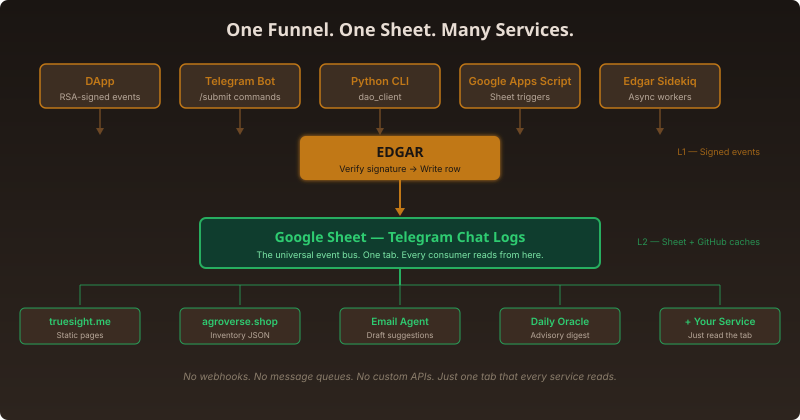

If you are not a developer, think of this as a shared notebook. Everyone writes into the same notebook in the same format. Anyone who wants to know what happened just reads the notebook. No special permission needed. No custom connections. That is the entire architecture.
The analogy: a shared notebook that never forgets
Imagine a kitchen co-op where every member writes what they contributed — beans, rice, hours worked — into a single large notebook. The notebook lives on a central table. When someone wants to cook dinner, they look at the notebook to see what is available. When someone wants to know who contributed what, they flip through the notebook. When the treasurer needs to split costs, the notebook has every entry.
Now imagine that every entry in that notebook is signed by the person who wrote it — so nobody can fake someone else's contribution. And imagine that copies of the notebook are posted publicly on a bulletin board every few minutes, so anyone walking by can read the latest version without entering the kitchen.
That is what the TrueSight DAO ecosystem looks like. The notebook is the Google Sheet. The signatures are RSA digital signatures. The bulletin board is GitHub. And Edgar is the person who checks the signatures and copies each entry into the notebook.
The funnel pattern: how one event becomes a row
Every significant event — a cacao sale, a contribution, an inventory movement, a tree planting, a proposal vote — follows the same four-step funnel. Here is what happens, concretely.
Step 1: Someone signs an event
A contributor creates an event — for example, reporting that they shipped ten bags of ceremonial cacao to a retailer. Before sending it anywhere, they cryptographically sign the event using an RSA keypair. The private key lives only on their device (browser localStorage for the DApp, or a local .env file for the Python CLI). The public key is stored in the Contributors Digital Signatures tab of the Main Ledger, so anyone can verify the signature later.
There are four ways to create a signed event today:
The DApp (
dapp.truesight.me) — web forms for expenses, contributions, inventory movements, and tree planting. The dapp repository contains the HTML, CSS, and JavaScript that runs in the browser and handles the RSA signing via WebCrypto.The Telegram bot — contributors send
/submitcommands to a bot, which constructs the event and returns a signing link that opens in the DApp.The Python CLI (
dao_client) — power users and AI agents runpython3 modules/report_dao_expenses.pyorpython3 modules/report_ai_agent_contribution.pyfrom their terminal. The dao_client repository contains the full Python package, including the RSA signing logic and the Edgar API wrapper.Google Apps Script triggers — certain sheet events (e.g. a new QR code scan) automatically fire GAS webhooks that construct and sign events on behalf of the DAO.
Step 2: Edgar verifies and writes
Edgar is a Rails application running at edgar.truesight.me. Its job is simple: receive the signed payload, verify that the signature matches the public key on file, and append a row to the Main Ledger. The sentiment_importer repository (Edgar's codebase) contains the controllers that handle this — see app/controllers/dao_controller.rb for the contribution endpoint and app/controllers/expenses_controller.rb for expenses.
Edgar does not store the data itself long-term. It writes to the Google Sheet immediately. The Sheet is the source of truth. Edgar is the gatekeeper that ensures only properly signed events get written.
Step 3: The row lands in Telegram Chat Logs
The Main Ledger is a Google Sheet with multiple tabs. The Telegram Chat Logs tab is the universal event bus. Every verified event from Edgar becomes one row in this tab. Each row has columns for timestamp, contributor, event type (e.g. [CONTRIBUTION EVENT], [INVENTORY MOVEMENT]), description, amount, and the contributor's digital signature.
Because it is a Google Sheet, the tab is readable by anyone with the link — and writable only by Edgar and a small set of authorized operators. This means downstream services can read it without needing special credentials, but they cannot modify it.
Step 4: Every service reads the same row
Once the row exists, any service can read it. There is no "push" notification. Services simply poll the Sheet (or its cached JSON mirrors) periodically and do what they need to do:
truesight.me reads shipment and pledge data to generate static HTML pages.
agroverse.shop reads inventory data to build the
store-inventory.jsonfile that drives the checkout page.The Beer Hall digest reads recent rows to compile a weekly summary.
The email agent reads Hit List status changes to draft follow-up emails.
This is the core design: one write path, many read paths. Instead of building custom APIs between every pair of services, we funnel everything through Edgar into a single tab, then let each consumer pull what it needs.
A real example: Gary records a cacao sale
Here is how the funnel works in practice, step by step, for a single real event.
Gary sells three bags of ceremonial cacao at a consignment store. He opens the DApp on his phone, fills in the Report Sale form, and taps submit. The DApp constructs a JSON payload and signs it with his private RSA key.
The signed payload is sent to
https://edgar.truesight.me/dao/submit_contribution. Edgar verifies the signature against Gary's public key (stored in the Contributors Digital Signatures tab, column E).Edgar appends a row to the Telegram Chat Logs tab with the event type
[SALES EVENT], the SKU, the quantity, the price, and the signature.A Google Apps Script trigger (in the tokenomics repository) notices the new row and updates the inventory counts in the offchain asset location tab.
A scheduled GitHub Action (in the go_to_market repository) polls the inventory data and regenerates
store-inventory.json, pushing it to the agroverse-inventory repository.The agroverse.shop checkout page loads the updated
store-inventory.jsonfrom GitHub raw. If the item is now out of stock, the "Add to Cart" button disappears automatically.
At no point in this chain did anyone build a custom API between agroverse.shop and Edgar. The shop simply reads a JSON file from GitHub. That JSON file was generated from the Sheet. The Sheet was updated by Edgar. Edgar received a signed event from the DApp. One funnel. One tab. Many readers.
Why this matters: plug and play
When a new service needs to know what happened in the DAO, it does not need a bespoke integration. It just needs read access to the Telegram Chat Logs tab (or one of its cached JSON mirrors on GitHub). The dao_client Python package already does this: it reads dao_members.json, dao_offchain_treasury.json, and other caches that are regenerated automatically whenever the sheet changes.
The same pattern powers every surface of the DAO:
truesight.me — shipment and pledge pages generated from the Sheet via Node scripts. The truesight_me repository contains the generation scripts under
scripts/generate-shipment-pages.js.agroverse.shop — inventory JSON published automatically from the ledger. The agroverse_shop repository reads
store-inventory.jsonfrom the agroverse-inventory repo, which is kept in sync by a scheduled GitHub Action in the go_to_market repository.The Beer Hall digest — compiled from recent Telegram Chat Logs entries via Claude Sonnet. The ecosystem_change_logs repository hosts the daily auto-generated digests.
The Daily Oracle — reads an advisory snapshot that is itself a digest of git merges, sheet activity, and iOS reminders. The agentic_ai_context repository contains the
ADVISORY_SNAPSHOT.mdthat the oracle consumes.Email agent drafts — triggered by Hit List status changes that originate from field agent location data flowing back into the same Sheet. The go_to_market repository contains the Python scripts that generate drafts from Sheet data.
No webhooks. No message queues. No GraphQL schemas. Just a tab that every service can read.
The security model: signatures, not secrets
You might worry: if everything lands in one Sheet, isn't that a single point of failure? What if someone edits a row to claim they contributed more than they did?
The answer is in the funnel's first step. Every event is RSA-signed before it reaches Edgar. Think of an RSA signature like a wax seal on a letter: anyone can verify that the seal matches the sender's ring, but only the sender possesses the ring. The public key (the ring pattern) is posted on the Sheet in the Contributors Digital Signatures tab, column E. The private key (the actual ring) never leaves the contributor's device.
This means even if someone with Sheet edit access retroactively changes a row, the cryptographic signature on the original event remains verifiable. You can take the original event text, the signature, and the public key, and mathematically prove whether they match. The DApp verify page does exactly this — anyone can paste in a submission and check it independently, with no DAO-operator trust required.
The Sheet is the convenience layer (easy to read, easy to search). The signature is the trust layer (impossible to forge without the private key). For a deeper technical walkthrough of the DApp signing flow, see our digital signature onboarding post.
Where the layers go next: L3 and L4
The current stack — RSA signatures (L1) feeding into GitHub JSON + Google Sheets (L2) — is already live and working. Two additional layers are in design, though neither is running yet. We mention them here as a future direction, not a shipped product.
L3 — TrueChain (designed, not running)
TrueChain is a private Ethereum network (Geth, Clique Proof-of-Authority, Chain ID 98794616) described in the TrueChain repository. In plain terms: it would be a tamper-proof copy of selected Sheet data, maintained by a small set of DAO-operated computers. A Mirror Service would compute SHA-256 hashes of canonical JSON caches and Merkle roots of Telegram Chat Logs batches, writing only the hashes — never the raw data — to the chain.
Why hashes and not the full data? Because a hash is like a fingerprint. If you have the original document, you can compute its fingerprint and check it against the one on the chain. If they match, the document has not been altered. If they don't match, something changed. This lets outsiders verify integrity without exposing sensitive data.
TrueChain only earns its keep if the DAO ever needs on-chain settlement (TDG as a payment medium) or externally provable governance. Until then, the L2 layer is sufficient for daily operations. The honest assessment is documented in our BLOCKCHAIN_ANCHORING_PROPOSAL.md.
L4 — Public-chain tip anchor (proposed)
The highest layer would periodically anchor a hash of the TrueChain tip (or directly of the L2 caches, skipping L3) into a public chain — Bitcoin OP_RETURN, Solana memo, or similar. Think of this as posting a daily photograph of the notebook's cover page into a newspaper. Anyone can buy the newspaper and verify that the photograph matches the notebook they have. This would let a hostile challenger verify DAO state without trusting any DAO operator.
The exact public chain, frequency, and signing key are intentionally left open until a prototype proves the path. For audit anchoring alone, a simple batched-timestamping service is probably more cost-effective than running a private Ethereum network. TrueChain is worth building only if the DAO's commerce or governance actually needs smart contracts. If neither condition materializes, the ecosystem can anchor directly from L2 to L4 and skip L3 entirely.
What this means in practice: build your own reader
If you are building a new tool for the DAO — a dashboard, a mobile app, a reporting pipeline — you do not need to ask for an API key or a webhook endpoint. You need two things:
Read access to the Telegram Chat Logs tab (or the public JSON caches in
TrueSightDAO/treasury-cache,TrueSightDAO/agroverse-inventory, etc.).The contributor's SPKI public key if you want to verify signatures locally.
Here is what reading from the cache looks like in practice. This is real Python from the dao_client package:
from truesight_dao_client.cache import MembersCache, TreasuryCache
# Load the latest member data (regenerated from the Sheet)
members = MembersCache.load()
print(members.by_email("garyjob@gmail.com"))
# Load the latest treasury snapshot
treasury = TreasuryCache.load()
print(treasury.total_usd())No custom protocol. No authentication dance. Just read a JSON file from GitHub. The architecture is deliberately boring: one funnel, one tab, many readers. Boring is the point. Boring means any developer can plug in without learning a custom protocol.
Closing: the sheet is the API
In most software ecosystems, APIs are the integration surface. In ours, the Google Sheet is the integration surface. Edgar writes to it. The DApp reads from it. The static sites read from it. The email agent reads from it. The oracle reads from it. And when the time comes, a blockchain mirror will read from it too.
The sheet is not a temporary hack. It is the protocol.
References and repositories
TrueSightDAO/dapp — The browser DApp (HTML/CSS/JS) that handles RSA signing via WebCrypto.
TrueSightDAO/sentiment_importer — Edgar (Rails API). See
app/controllers/dao_controller.rbandapp/controllers/expenses_controller.rb.TrueSightDAO/dao_client — Python CLI for signed contributions and cache readers.
TrueSightDAO/tokenomics — Google Apps Script automations for tokenomics, inventory, QR codes, and sheet triggers.
TrueSightDAO/truesight_me — Static site generator (shipments, pledges, blog).
TrueSightDAO/agroverse_shop — E-commerce site and inventory JSON consumer.
TrueSightDAO/agroverse-inventory — Auto-published inventory JSON snapshots.
TrueSightDAO/go_to_market — Market research scripts, email agent, and Hit List automation.
TrueSightDAO/TrueChain — Private Ethereum network (Geth, genesis, contracts).
BLOCKCHAIN_ANCHORING_PROPOSAL.md — Full technical proposal for L3/L4 anchoring.
DApp signature verifier — Check any submission independently.
Join the discussion
Questions about the architecture? Share in Telegram, Beer Hall, and on the DAO web app.